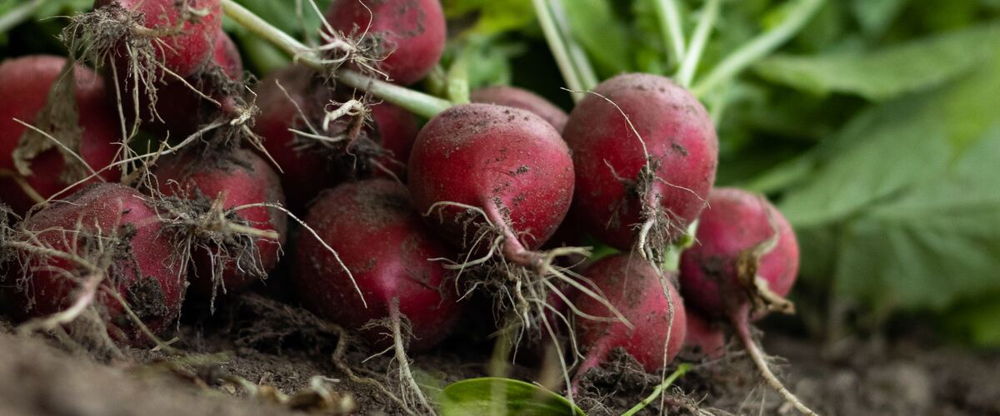

When to plant radishes in Longview and Kelso, WA
Plant radishes from seed, directly in the garden in Longview and Kelso, Mar 1 – Apr 26. For a fall harvest, plant again Sep 3–17.
- Difficulty
- Easy
- Sun
- Full sun; tolerates light shade
- Spacing
- 1 inch apart (thin to 2 inches)
- Planting depth
- ½ inch deep
- Frost
- Handles light frost
- First harvest
- About 28 days after planting
Why these dates
Longview and Kelso's typical last spring frost is April 8. As a cool-season crop that handles light frost, this crop doesn't need to wait for that date. In the west-side valleys, though, the soil usually isn't ready to work until about March 1.
West-side valleys. The Willamette Valley, Puget Sound and southern Oregon valleys. Long frost-free seasons, but soil stays cold and wet into May, so warm crops wait for warm soil, not just the last frost.
How to grow radishes in Longview and Kelso
- Prepare the bed: loosen the soil and mix in an inch or two of compost.
- Plant seeds Mar 1 – Apr 26, ½ inch deep, 1 inch apart (thin to 2 inches).
- Keep the soil evenly moist until sprouts appear, which can take one to three weeks in cool soil.
- Plant again Sep 3–17 for a fall harvest.
- Harvest: Most are ready in about four weeks. Pull them while they're small; they turn woody if left too long.
Key numbers
- 45–85°FSoil to sprout
- 6.0–7.0Soil pH
- 1 inch a week, evenlyWater
- Root maggotsBiggest risk
Top care tip: Keep the top few inches of soil evenly moist, since radishes that dry out turn hot, woody or cracked.
Growing notes
What makes the difference in Northwest gardens, in plain language.
Soil and steady growth
Radishes want loose, crumbly soil with no rocks or clods, and a pH of about 6.0 to 7.0. They grow so fast that they rarely need extra fertilizer; too much nitrogen gives you big leaves and skinny roots. The real secret is quick, even growth. Keep the top few inches of soil moist from sowing to harvest. A radish that dries out and then gets soaked tends to crack, and one that grows slowly in dry soil turns hot and tough.
Why radishes go woody or bolt
Radishes are a cool-weather crop. As days get long and warm in early summer, plants switch from making a root to making a flower stalk, and the root turns pithy and sharp. That is why the guide suggests short rows every two weeks rather than one big sowing. In the Northwest, sow from early spring into May, skip midsummer, and start again in late August for a fall crop. East of the Cascades, spring heat arrives fast, so get the first sowings in as soon as the soil can be worked.
Keeping root maggots out
Cabbage root maggots are the larvae of a small gray fly that lays eggs at the base of young radishes. They do the most damage in cool, wet spring soil, which is exactly what western Oregon and Washington have in April and May. Row cover works because it blocks the fly before eggs are laid, so lay it on the day you sow and tuck the edges into the soil. Rotate where you plant radishes, turnips and cabbage-family crops each year so maggots don't build up in one bed.
Common questions
When is the last frost in Longview and Kelso, WA?
Typically April 8. In 9 years out of 10, frost is over by May 2. These are 1991–2020 NOAA climate normals for Longview.
Is it too late to plant radishes in Longview and Kelso?
The spring planting window runs through April 26. If you miss it, plant again for fall from September 3 to September 17.
How long until I can harvest radishes?
About 28 days after planting. Most are ready in about four weeks. Pull them while they're small; they turn woody if left too long.
Why are my radishes all leaves and no root?
Usually the plants are too crowded, too shaded, or getting too much nitrogen. Thin seedlings to about 2 inches apart and give them full sun. Hot weather can also push plants to flower before they form a root.
Why are my radishes so spicy?
Heat and dry soil make radishes hotter. Spring and fall radishes grown in cool weather with steady water are the mildest. Pick them on time, since older radishes get sharper and woodier.
Can I grow radishes in summer in the Northwest?
You can try, but most varieties bolt and turn pithy in long, warm summer days. It's easier to take a break from June to mid-August and sow again for fall. Fall radishes are often the best of the year here.
Also plant in Longview and Kelso around the same time
Planting dates for radishes in nearby areas
- Vancouver, WA Mar 1 – Apr 26
- Centralia and Chehalis, WA Mar 11 – May 6
- Portland, OR Mar 1 – Apr 26
- Gresham, OR Mar 1 – Apr 26
- Wilsonville and Canby, OR Mar 1 – Apr 26
- Salem, OR Mar 1 – Apr 26
Full planting calendar for Longview and Kelso · Radishes in every city